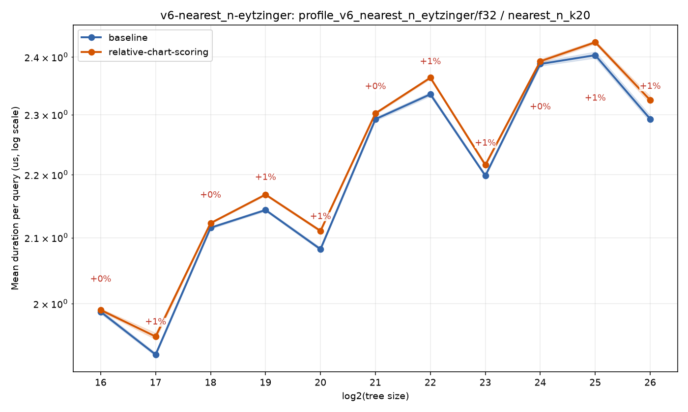
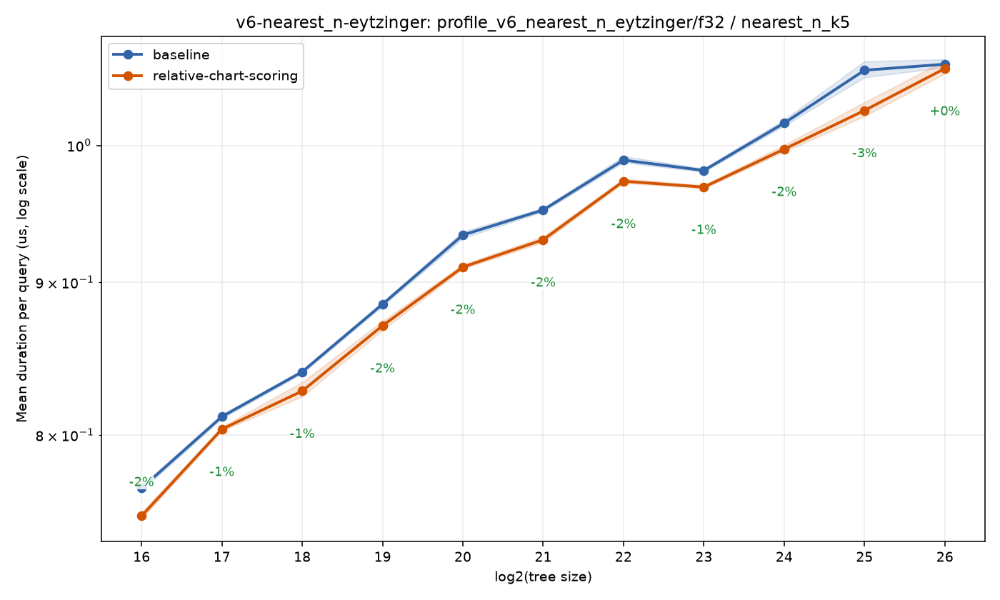
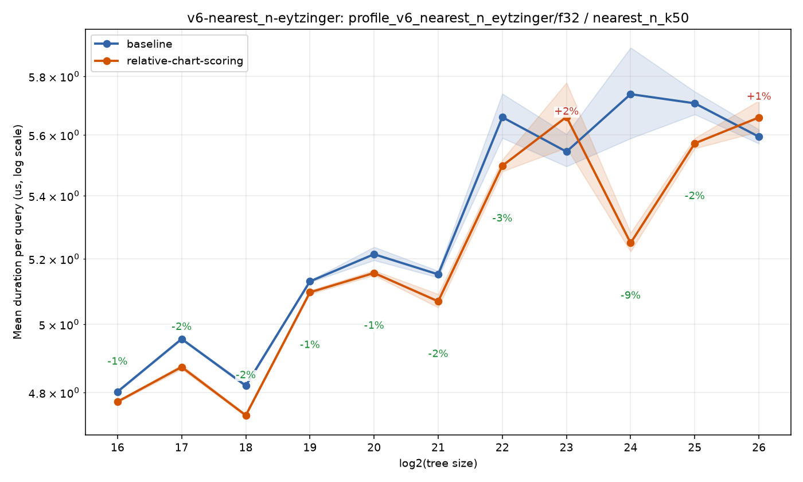
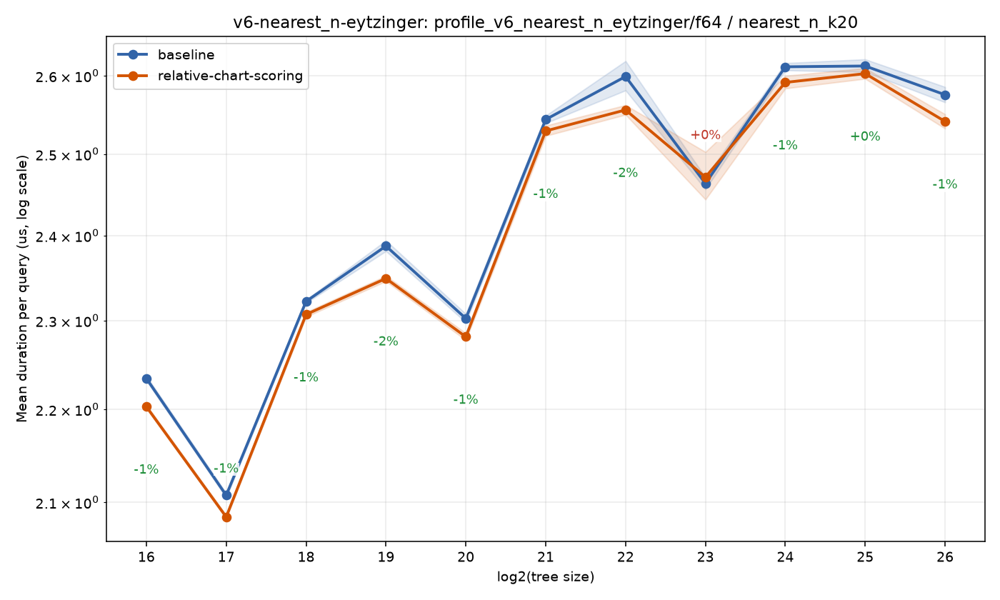
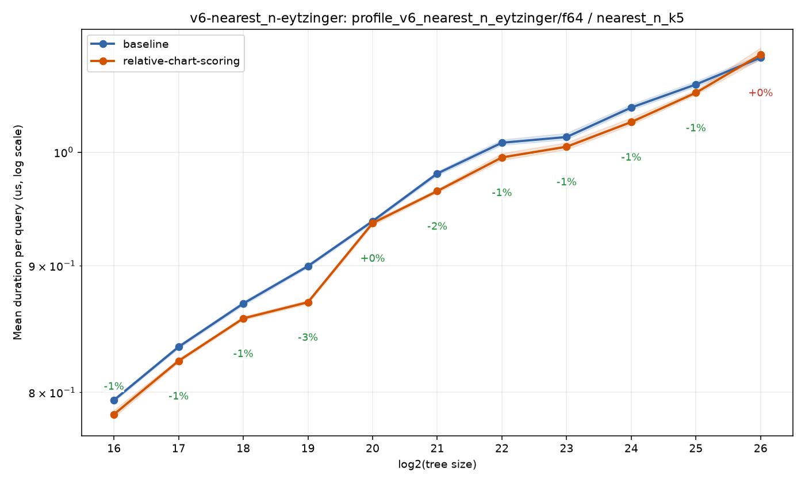
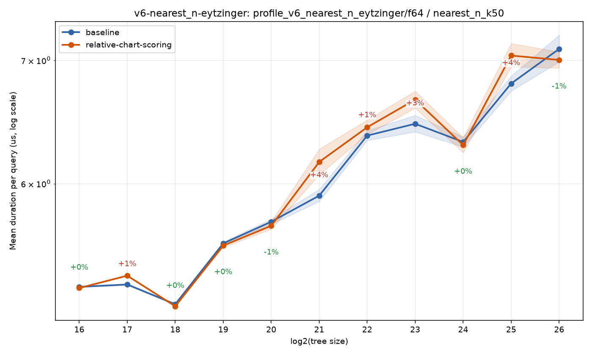
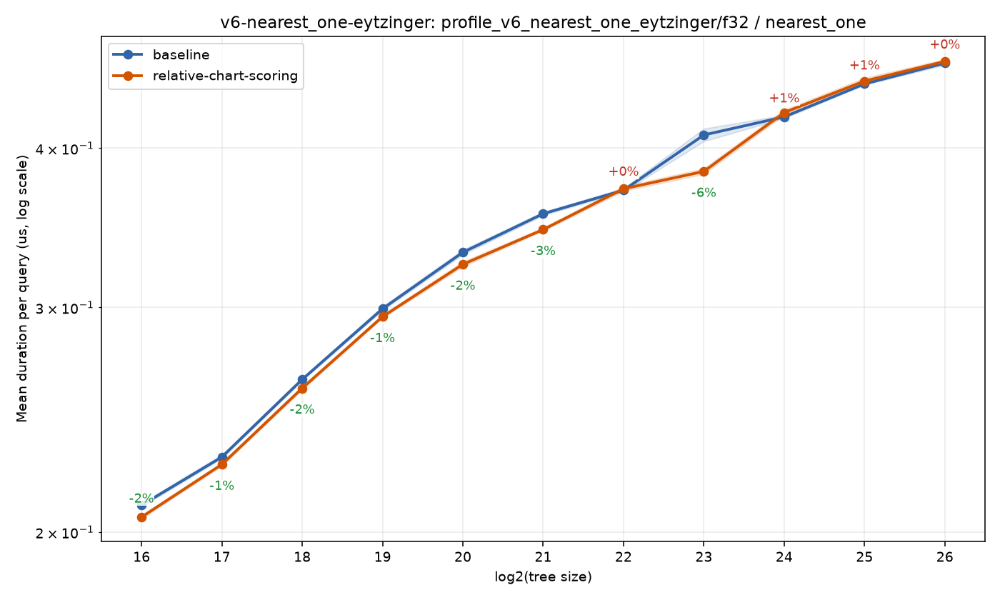
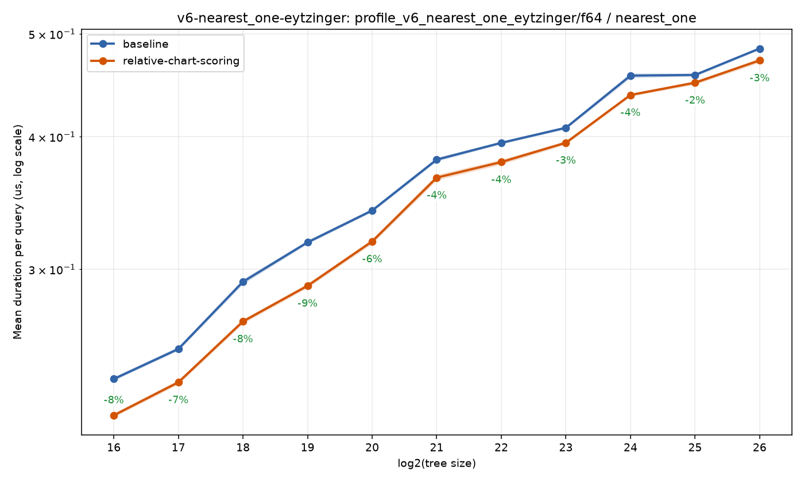

Home
Benchmark run: feature/relative-chart-scoring
3b9ae7607071749ce2bcbe93f91889899a96134f · 2026-07-18T20:53:40Z
Benchmark suite: basic
Branch comparison run
Compared against baseline run 20260718T193341Z-18286c58ca74.
https://sdd-org.github.io/kiddo/branches/feature-relative-chart-scoring/history/20260718T205340Z-3b9ae7607071/index.html
bench_result-v6-nearest_n-eytzinger-f32-nearest_n_k20-relative-chart-scoring.png

bench_result-v6-nearest_n-eytzinger-f32-nearest_n_k5-relative-chart-scoring.png

bench_result-v6-nearest_n-eytzinger-f32-nearest_n_k50-relative-chart-scoring.png

bench_result-v6-nearest_n-eytzinger-f64-nearest_n_k20-relative-chart-scoring.png

bench_result-v6-nearest_n-eytzinger-f64-nearest_n_k5-relative-chart-scoring.png

bench_result-v6-nearest_n-eytzinger-f64-nearest_n_k50-relative-chart-scoring.png

bench_result-v6-nearest_one-eytzinger-f32-nearest_one-relative-chart-scoring.png

bench_result-v6-nearest_one-eytzinger-f64-nearest_one-relative-chart-scoring.png
